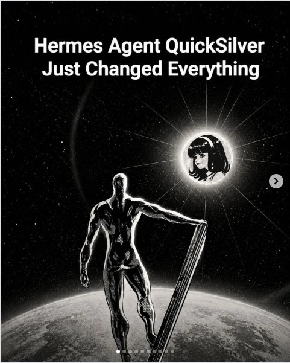
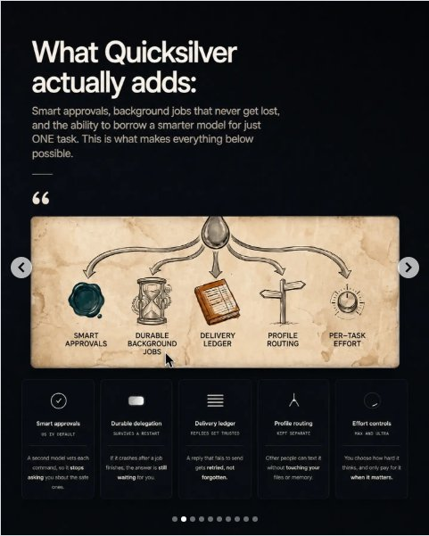
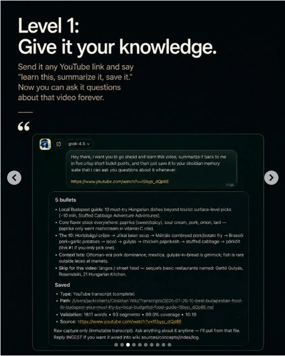
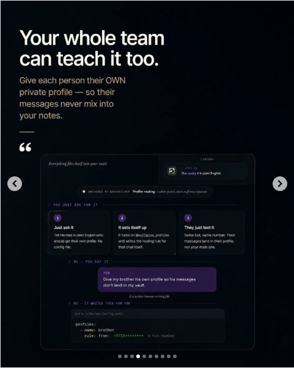
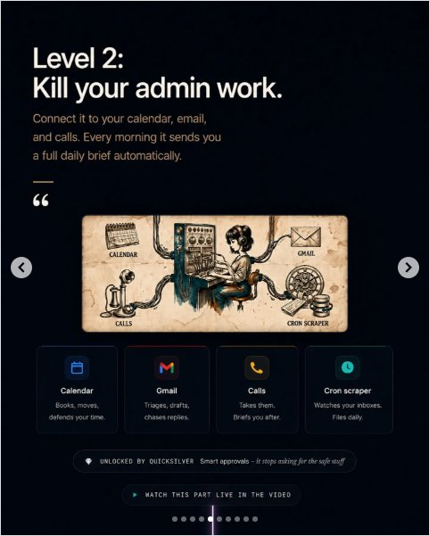
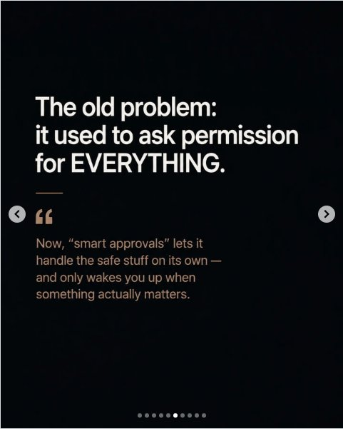
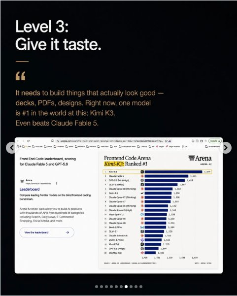
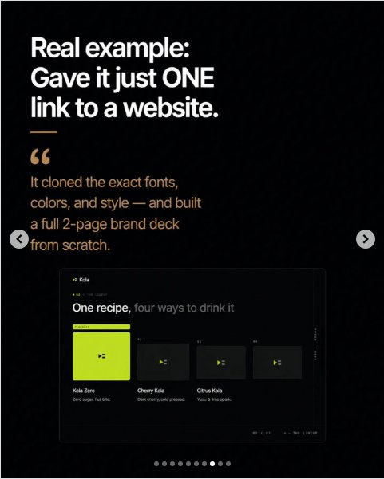
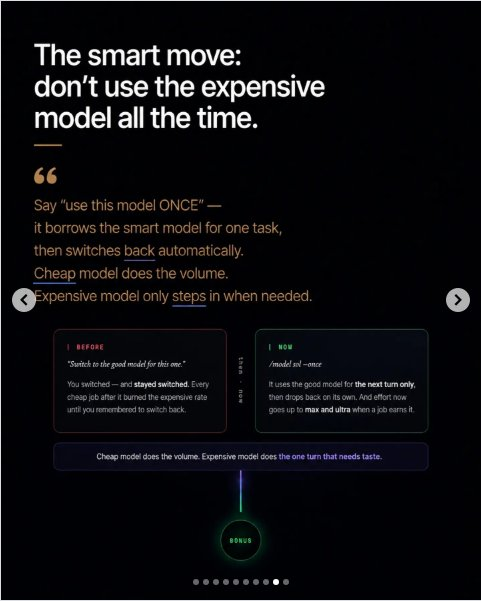
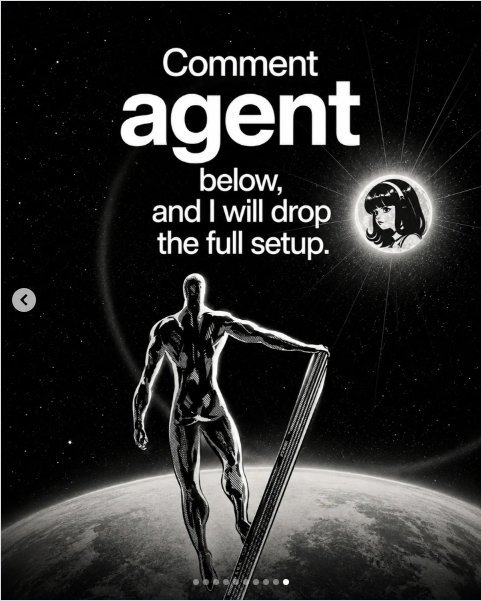

Instagram Post

Comment “agent” I will send you the link!
carousel (10 slides) (enriched by ClaudeClaw)
Summary
Hermes Agent QuickSilver Just Changed Everything | What Quicksilver actually adds: Smart approvals, backgrou... | Level 1: Give it your knowledge | Your whole team can teach it too | Level 2: Kill your admin work | The old problem: it used to ask permission for EVERYTHING | Level 3: Give it taste | Real example: Gave it just ONE link to a website | The smart move: don't use the expensive model ...
Caption
Comment “agent” I will send you the link!
.
.
.
.
#openclaw #ai #claude #aiagents
1
Hermes Agent QuickSilver Just Changed Everything
A black and white image depicts a muscular, metallic figure resembling the Silver Surfer standing on a board above a planet, looking towards a glowing circle containing an anime-style female face in a starry sky.
2
What Quicksilver actually adds: Smart approvals, background jobs that never get lost, and the ability to borrow a smarter model for just ONE task. This is what makes everything below possible. “ SMART APPROVALS DURABLE BACKGROUND JOBS DELIVERY LEDGER PROFILE ROUTING PER-TASK EFFORT Smart approvals AS BY DEFAULT A second model vets each command, so it stops asking you about the safe ones. Durable delegation SURVIVES A RESTART If it crashes after a job finishes, the answer is still waiting for you. Delivery ledger REPLIES GET TRUSTED A reply that fails to send gets retried, not forgotten. Profile routing KEPT SEPARATE Other people can text it without touching your files or memory. Effort controls MAX AND ULTRA You choose how hard it thinks, and only pay for it when it matters.
An infographic on a dark background presents the features of "Quicksilver," including a title, descriptive text, a central diagram with five interconnected concepts, and five detailed feature cards with icons and explanations.
3
Level 1: Give it your knowledge. Send it any YouTube link and say "learn this, summarize it, save it." Now you can ask it questions about that video forever. “
4
Your whole team can teach it too. Give each person their OWN private profile — so their messages never mix into your notes. “ Everything files itself into your vault. 1 storyline 2 STEP
5
Level 2: Kill your admin work. Connect it to your calendar, email, and calls. Every morning it sends you a full daily brief automatically. “ CALENDAR GMAIL CALLS CRON SCRAPER Calendar Books, moves, defends your time. Gmail Triages, drafts, chases replies. Calls Takes them. Briefs you after. Cron scraper Watches your inboxes. Files daily. UNLOCKED BY QUICKSILVER Smart approvals - it stops asking for the safe stuff WATCH THIS PART LIVE IN THE VIDEO
This is a dark-themed digital slide or infographic promoting a service to "Kill your admin work," featuring a central vintage-style diagram of a person at a control panel connected to calendar, email, calls, and a cron scraper, with four modern app icons below detailing their functions.
6
The old problem: it used to ask permission for EVERYTHING. “ Now, “smart approvals” lets it handle the safe stuff on its own — and only wakes you up when something actually matters.
A digital slide or social media post displays white and orange text on a dark background, with navigation arrows and pagination dots visible.
7
Level 3: Give it taste. " It needs to build things that actually look good — decks, PDFs, designs. Right now, one model is #1 in the world at
8
Real example: Gave it just ONE link to a website. “ It cloned the exact fonts, colors, and style — and built a full 2-page brand deck from scratch. 0
9
The smart move: don't use the expensive model all the time. “ Say “use this model ONCE” — it borrows the smart model for one task, then switches back automatically. Cheap model does the volume. Expensive model only steps in when needed. | BEFORE "Switch to the good model for this one." You switched — and stayed switched. Every cheap job after it burned the expensive rate until you remembered to switch back. THEN - NOW | NOW /model sol - once It uses the good model for the next turn only, then drops back on its own. And effort now goes up to max and ultra when a job earns it. Cheap model does the volume. Expensive model does the one turn that needs taste. BONUS
A dark-themed presentation slide or infographic displays text about using expensive and cheap models, featuring a main title, a quote, two comparison boxes labeled "BEFORE" and "NOW," and a "BONUS" section at the bottom.
10
Comment agent below, and I will drop the full setup.
A grayscale image depicts a metallic humanoid figure standing on a board above a planet in space, with a starry background and a glowing circle containing an anime-style female face in the upper right.
All slides








